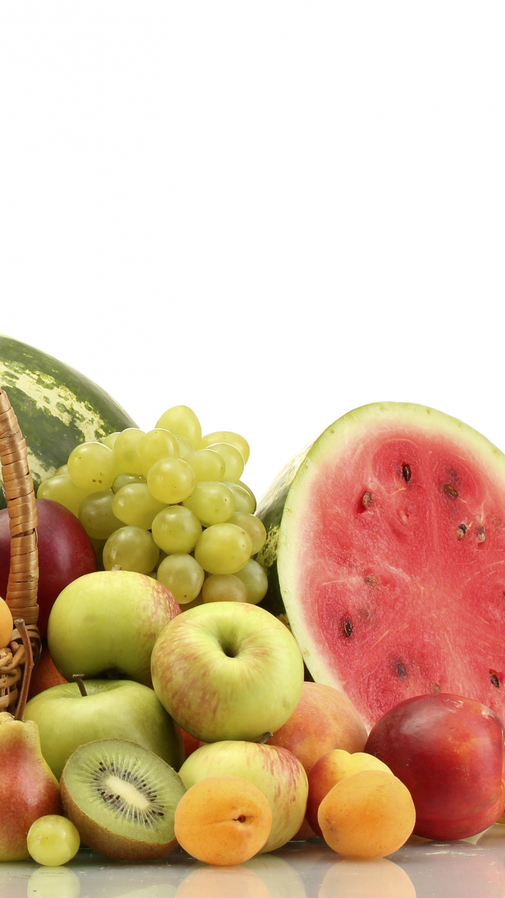
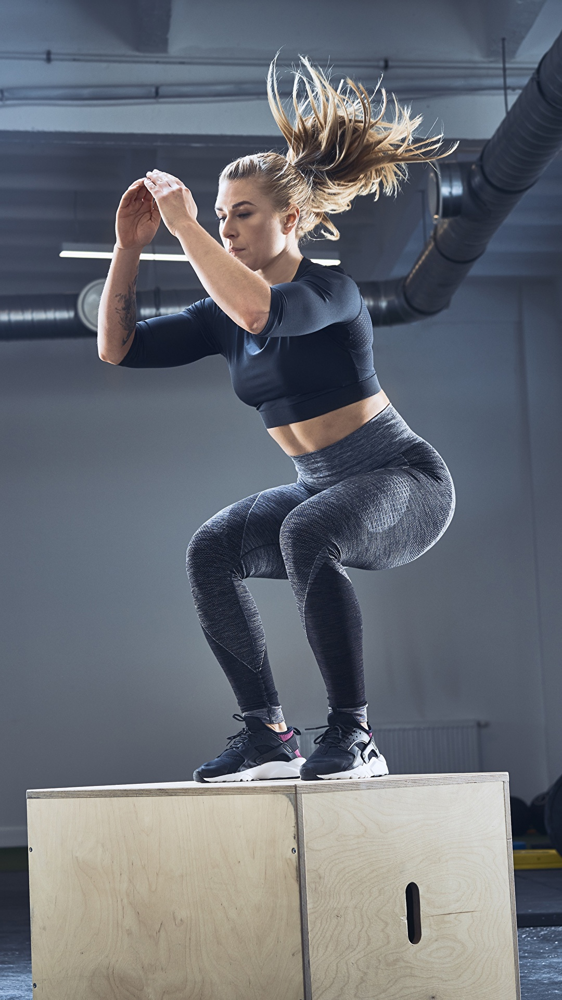
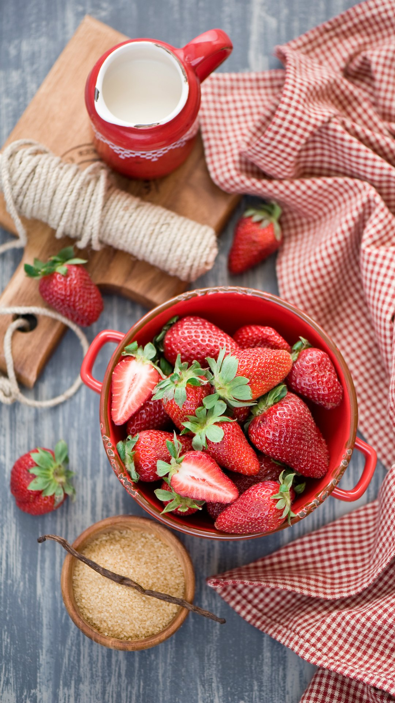
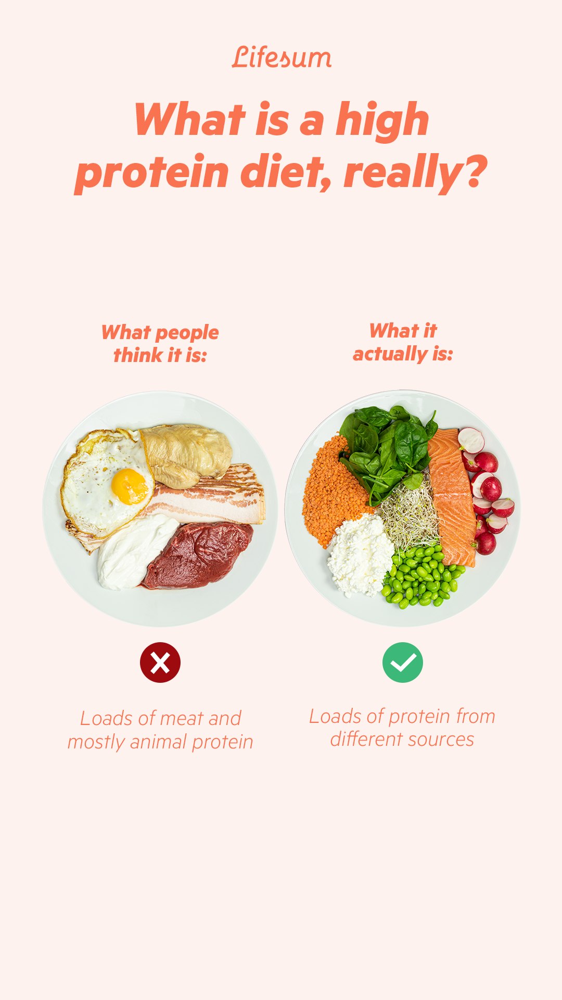
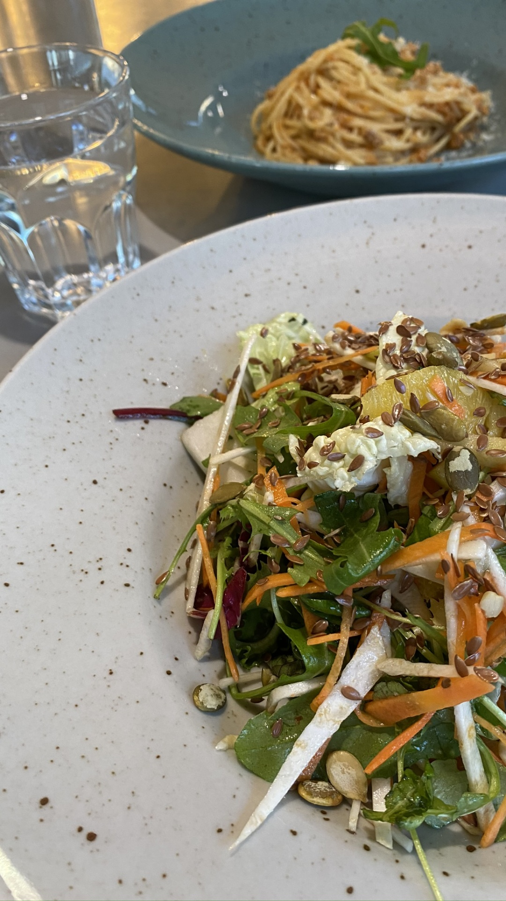
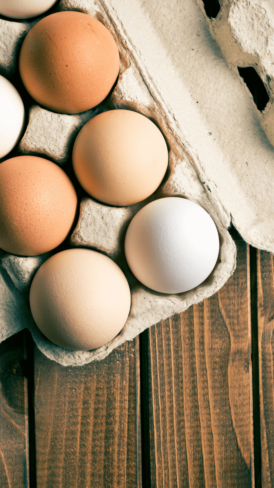
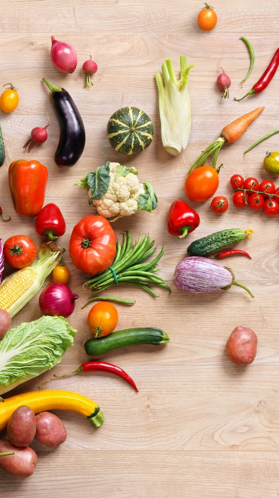
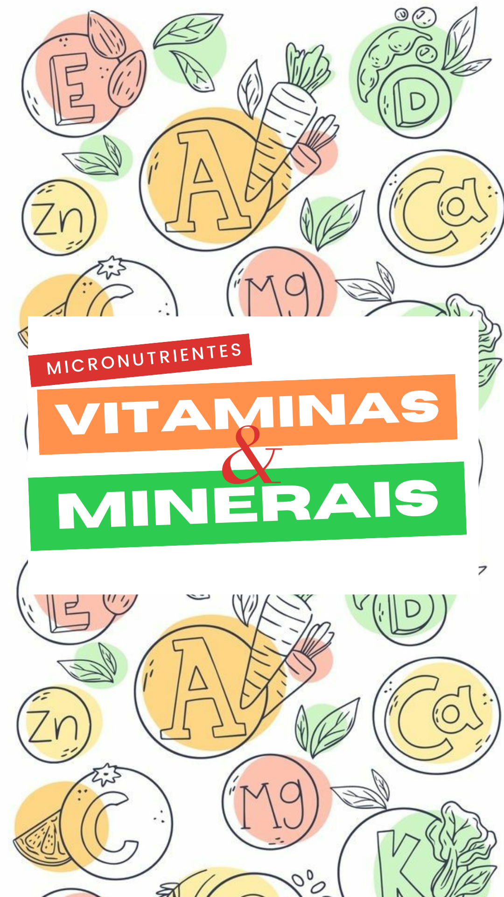

Alimentos não processados
InicianteDica:
Regule sua alimentação a partir de nossa calculadora, e sempre, sempre mesmo, prefira alimentos não processados a alimentos processados ou ultraprocessados!

Musculação
IntermediárioDica:
A musculação, combinada com a dieta, é uma das formas mais eficientes de perder peso ou ganhar massa muscular. Sendo assim, use nosso serviço de contato à profissionais e comece a se exercitar.

Frutas
InicianteDica:
O uso de frutas em uma dieta, em especial naquelas com o objetivo de perder peso, é uma ótima estratégia, já que garantem saciedade, altas quantidades de vitaminas, minerais e fibras. Use nossa calculadora e encontre a fruta que melhor se encaixa na sua dieta.

Proteínas
AmadorDica:
Você já sabe que proteínas ao lado dos seus parceiros macronutrientes carboidratos e gorduras são de extrema importância em uma dieta, né? Mas você sabia que nossos corpos produzem 13 proteínas e as 9 restantes só podem ser adquiridas através da ingestão direta dessas?

Vegetarianismo
AvançadoDica:
Tipo de dieta em que não são consumidos nenhum tipo de carne. São utilizados diversos grãos, como lentilha, feijão, quinoa, para garantir proteínas para a dieta.

Ovos
InicianteDica:
É extremamente nutritivo, sendo uma excelente fonte de proteínas, além de oferecer minerais e nutrientes. Não deixe de fora da sua dieta!

Vegetais
InicianteDica:
Reduzem o colesterol e favorecem a saúde e a redução do peso corporal, são de enorme importância em uma dieta equilibrada!
